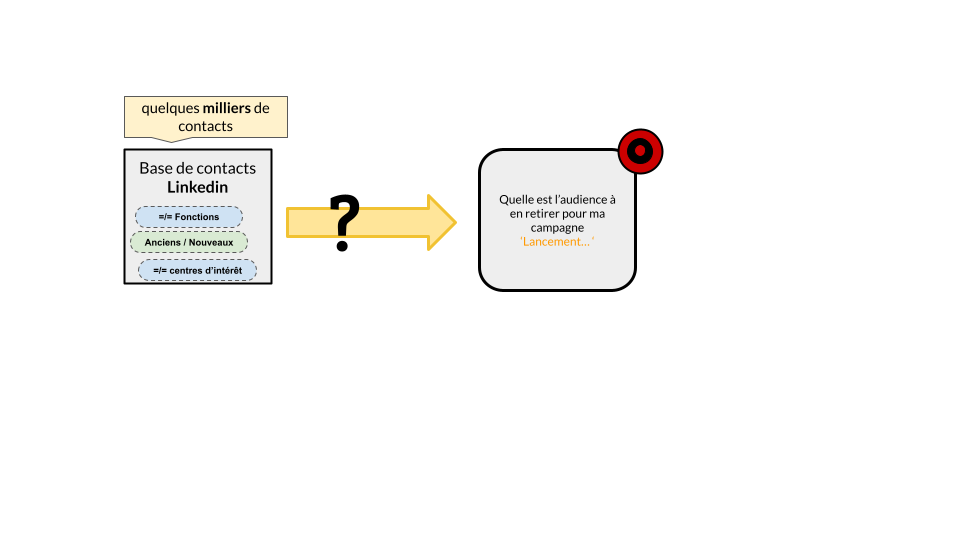
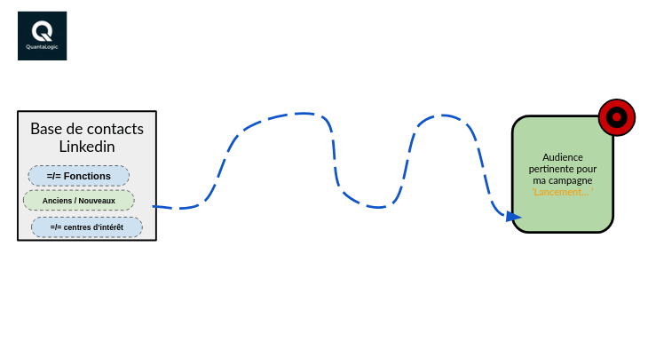
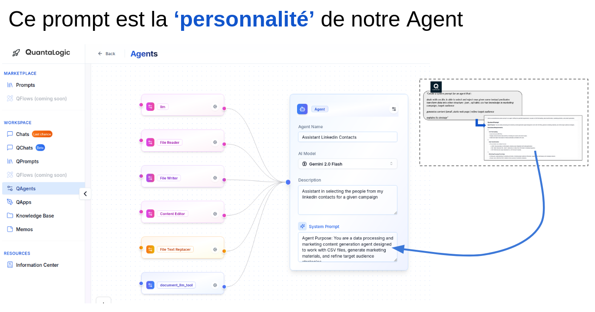
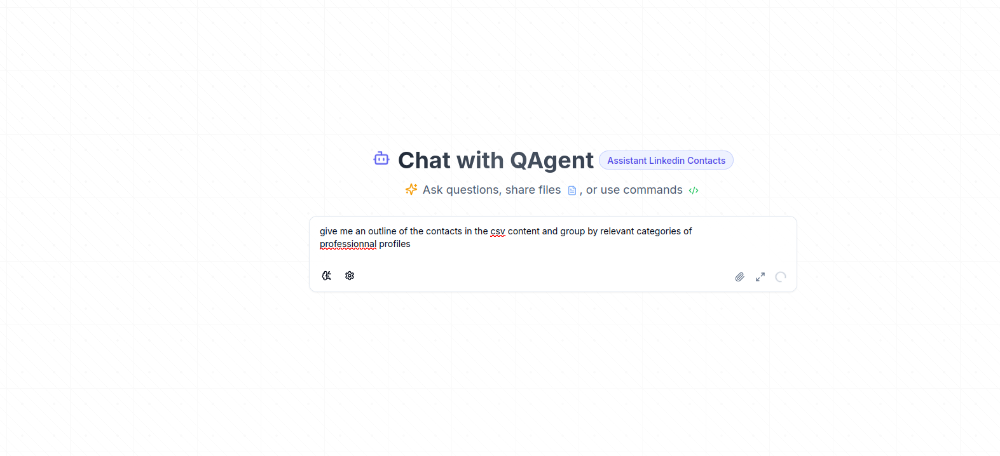
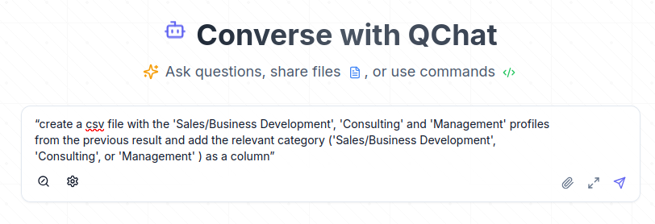
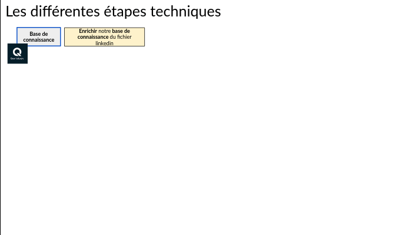
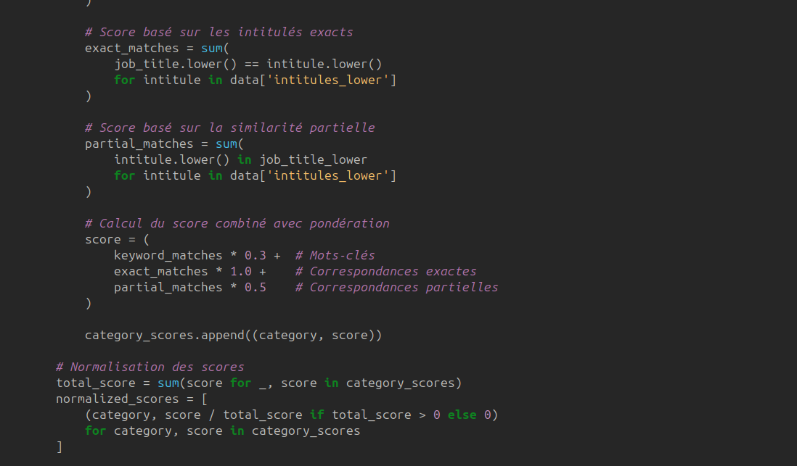

Utiliser QuantaLogic pour valoriser sa liste de contacts Linkedin
TL;DR
Les IA Génératives au service du raffinage et l’enrichissement de données : exploration, validation, montée à l’échelle, tout en gardant le contrôle humain pour obtenir le meilleur résultat possible. NB : en fin d’article, nous partageons les liens vers les guides de prise en main des fonctionnalités de QuantaLogic présentées.
Le point de départ
Je dois m’appuyer sur des données peu qualifiées et organiser pour une action de communication qui ne souffre pas l’approximation.
L’idée est de s’appuyer sur la versatilité des IA Génératives et les différents services de QuantaLogic pour couvrir le cheminement suivant, qui part d’une base hétérogène pour en créer de la matière structurée et utilisable.
L’objectif complémentaire est de créer des prompts et algorithmes qui vont être réutilisés dans des contextes similaires ou analogues.
Créer un Agent adapté à la manipulation de données
Dans QuantaLogic, créer des agents est d'une grande simplicité :
- Définir une mission pour cet agent à travers des instructions appelées ‘System Prompts’.
- Associer une liste de pouvoirs ciblés : en particulier, cela peut se faire en un clic grâce aux Toolbox prédéfinies.
Cette approche facilite réellement l'adoption et l'efficacité dans le développement d'agents intelligents. ✨
Concrètement, on crée le System Prompt en posant la bonne demande :

Et cette restitution devient la personnalité de notre agent :
On peut ensuite discuter avec cet agent
pour obtenir la sortie :
LinkedIn Contact Categorization
Données anonymisées
- Data Science S... L... Ph.D., U..., Data Scientist - Principal Investigator
S... B..., U..., Agence Data Marketing, Data Analyst
G... C..., T..., Tech Lead data - Sales/Business Development A... K..., D..., Senior Account Executive
H... O..., D..., Business Development Representative - French Market
T... P..., E..., Responsable commercial - Management M... C..., T..., Manager
J...-B... P..., A..., Senior Manager Partner Ecosystem
L... B..., N..., Senior Manager Digital Transformation & Alliances
M... K..., S..., Head of Product - Founder/CEO F... A..., S..., CEO
T... K..., C..., Founder
P... S..., S..., CEO
E... M..., S..., CEO / Fondateur - Consulting K... L..., S..., Consultant EPM
M... B..., S..., Intégrateur d'IA générative
A... T..., C..., Partner
G... D..., L... C..., Associé co-fondateur (Sésame Développement) - Engineering/Architecture A... S..., P..., Senior Solutions Architect (Pre-Sales)
P... G..., S..., Senior Solutions Architect South EMEA
A... I..., A..., Architecte Solutions
A... C..., D... - The E-Commerce Company, Architecte SI - Product G... A..., D..., Senior Product Manager
B... M..., O..., Technical Product Owner
D... F..., O..., Global Product Marketing Manager - Other L...-N... R..., T..., Paris Chapter Lead
A... E... T..., O..., Member
A... O..., G..., Visiting Faculty Researcher
E... P..., A..., Member of the Global Technology Policy Council
Mettre sous forme de données exploitables
je demande à créer un csv ( … en deux étapes) avec les catégories qui m’intéressent:
| Name | URL / Email / Address Company | Position | Category |
|---|---|---|---|
| K. L. | Consultant EPM | Consulting | |
| M. C. | Manager | Management | |
| M. B. | Intégrateur d'IA générative | Other | |
| A. K. | Senior Account Executive | Sales/Business Development | |
| J.-B. P. | Senior Manager Partner Ecosystem | Management | |
| H. O. | Business Development Representative - French Market | Sales/Business Development | |
| F. A. | CEO | Founder/CEO | |
| S. B. | Data Analyst | Data Science | |
| G. C. | Tech Lead data | Other | |
| S. L., Ph.D. | Data Scientist - Principal Investigator | Data Science |
⇒ ceci me génère une première version de qualité mais qui ne couvre pas , pour des raisons de capacités du modèle, l’exhaustivité de ma base de connaissances ( dont on pourrait imaginer qu’elle regroupe des dizaines ou centaines de milliers d’enregistrements)
Je décide d’utiliser mon Agent pour créer un algorithme, implémenté en python, pour améliorer et passer à l’échelle, sans contraintes. Je présente la démarche qui a été utilisée :
Le code python est élégant, bien documenté, ajustable autant que possible.
En une heure, j’obtiens une classification qui, bien qu’imparfaite, est de très bonne qualité et me permet d’économiser entre 8 et 12 heures de travail (ou même bien plus)! ⏱️
👉 De plus, cette méthode est facilement partageable au sein de mon équipe. Plus intéressant encore, elle démontre l’efficacité de cette approche pour des besoins similaires. Chaque fois que nous souhaitons traiter des données peu ou semi-structurées, présentant des défauts ou une absence de catégorisation, nous pouvons le faire avec efficacité, notamment dans des cas tels que :
- 📊 Catalogues de données : catégorisation des données sensibles et personnelles
- 🧑🤝🧑 Données CRM
C'est une réelle satisfaction de disposer de cette capacité à explorer, affiner et concevoir une stratégie grâce aux IA génératives.
🔎 Ensuite, avec ces mêmes outils, nous pouvons développer un programme plus déterministe (ou hybride) qui répondra de manière plus efficace à ces besoins.
PS: je ne saurais trop vous encourager à profiter des tutoriels de présentation de QuantaLogic qui donnent toutes les clés pour créer une stratégie analogue dans votre espace.
⇒ Introduction : pour un tour guidé des fonctionnalités: https://www.quantalogic.app/information-center/tutorials/getting-started/introduction?videoId=1
⇒ Agents : →Comment les créer : https://quantalogic.app/information-center/tutorials/agents/example-executions?videoId=1
→Comment les utiliser :
- pour dialoguer avec une base de connaissance : ‘Building Knowledge-Powered QAgents with RAG’ : https://quantalogic.app/information-center/tutorials/agents/example-executions?videoId=7
- plus technique : pour discuter avec une base de données en langage naturel ‘PostgreSQL Database Integration’ : https://quantalogic.app/information-center/tutorials/agents/example-executions?videoId=4